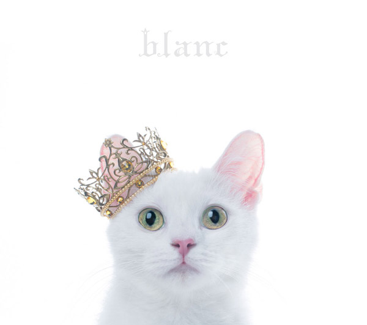

Hyperblog
Aimer best singer ever💖

Este es el Título atractivo e interesante del post
Y este es el párrafo de inicio donde vamos a explicar las cosas increíbles que se pueden hacer con ramas
Los blogs son la mejor forma de compartir información y tus ideas. Mucho más que ir a conferencias o salir en youtube. Excepto si eres Rockstar. Pero estadísticamente no lo eres.... por ahora. Suscríbete y dale like.